How Does Age Impact NBA Performance?
I was eight years old when I first saw LeBron James play.
I must have replayed his thunderous dunk over Kevin Garnett during Game 4 of the 2008 Eastern Conference Semifinals a thousand times. Growing up in Pakistan, basketball was nowhere near as popular as cricket or soccer, so my basketball hoop was usually a soccer ball and whatever wall happened to be nearby. Still, there was something captivating about watching LeBron. Even as a kid, it felt like I was watching someone special.
I’m now 25 years old, and LeBron is preparing for his 24th NBA season.
Most professional athletes are fortunate to have careers that last a decade. Even among NBA players, maintaining elite performance into your mid-thirties is considered exceptional. Yet LeBron has continued performing at an All-NBA level well into an age where many players have long since retired. He’s not alone, either. Players like Kareem Abdul-Jabbar, Tim Duncan, Dirk Nowitzki, and Vince Carter all built remarkably long careers, remaining productive long after their expected prime years.
As both a basketball fan and a math nerd, I couldn’t help but wonder: how much does age actually affect player performance?
We often hear that athletes inevitably decline as they get older, but the careers of players like LeBron seem to challenge that assumption. When does an NBA player truly peak? How quickly does performance decline? And do superstar players age differently than the average player?
To explore these questions, I analyzed NBA player data from the 2002 through 2022 seasons, combining game statistics with player age information to examine how performance changes over the course of a career. Rather than looking at every possible metric, I focused on two that are easy to understand and closely tied to a player’s role on the court: points scored and minutes played.
The analysis begins by examining league-wide trends, looking at how age relates to scoring output and playing time across thousands of NBA games. From there, I narrow the focus to the league’s top scorers to see whether elite players follow the same aging patterns as everyone else or whether they manage to bend the curve.
What started as a simple basketball question ultimately became an opportunity to explore a broader idea: how data can help us separate perception from reality. Along the way, we’ll uncover some expected trends, a few surprising ones, and perhaps gain a better understanding of what makes players like LeBron James so extraordinary.
Data & Approach
I analyzed player data spanning the 2002–2022 seasons, sourced through the hoopR package. Using R, I combined player demographic information with game-level statistics to create a unified dataset containing both performance metrics and age data. After cleaning and preparing the data, I calculated each player’s age during a given season and examined how that age related to two key indicators of performance: points scored and minutes played.
The analysis was conducted in two stages. First, I looked at league-wide trends to understand how age impacts the average NBA player. I then narrowed the focus to the league’s highest-scoring players to see whether elite performers follow the same aging patterns as the broader population. Throughout the project, I used data visualization and linear regression models to identify trends, quantify relationships, and uncover insights that might not be immediately obvious from raw statistics alone.
| Category | Details |
|---|---|
| Time Period | 2002–2022 NBA Seasons |
| Data Sources | NBA Box Score Data & Player Information |
| Tools Used | R, dplyr, ggplot2, Linear Regression |
| Performance Metrics | Points Scored, Minutes Played |
| Primary Variable | Player Age |
| Analysis Type | Exploratory Data Analysis & Statistical Modeling |
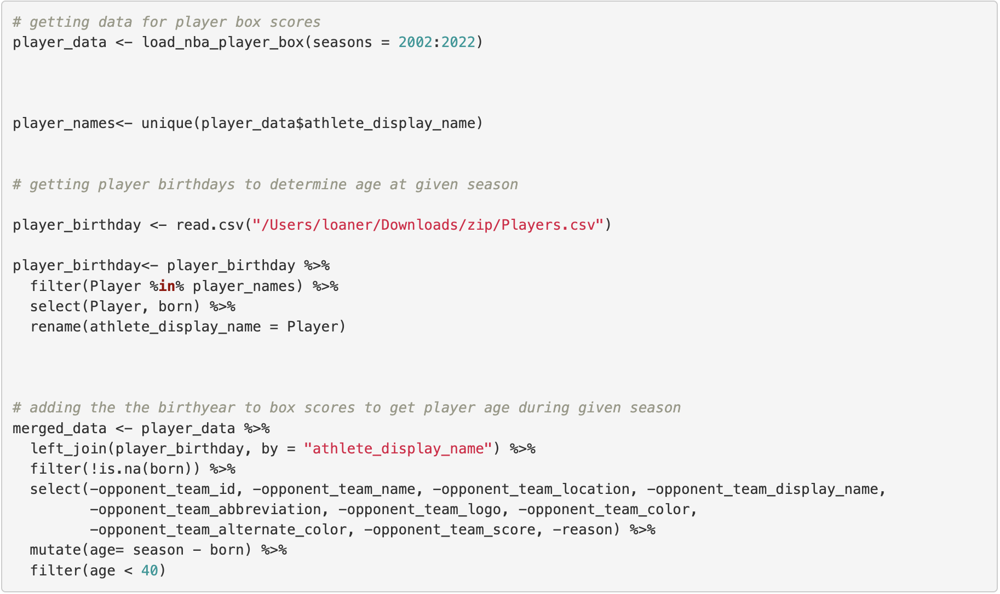
Most NBA Players Are Between 23 and 28 Years Old
Before looking at performance, I wanted to understand the age distribution of the NBA player population itself.
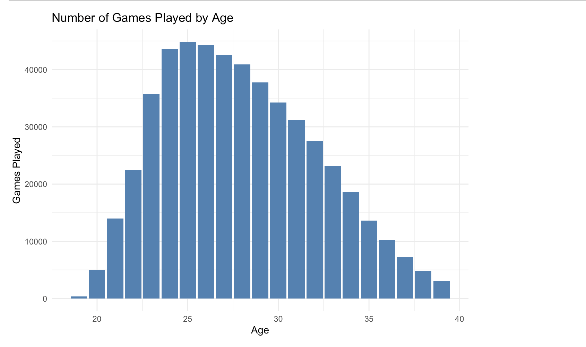
The distribution is unimodal and moderately right-skewed, with the highest concentration of games occurring between ages 23 and 28 and a mode around age 25. Participation declines steadily beyond age 30, while the long right tail reflects the relatively small group of players who remain in the league into their late thirties.
This provides a useful baseline for examining whether player performance follows a similar aging pattern.
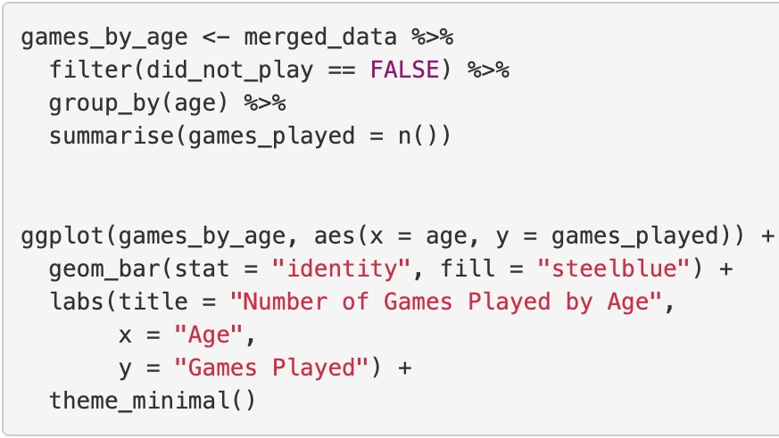
Scoring Production Declines Slightly With Age
To examine how scoring changes with age, I fit a simple linear regression model using points scored as the response variable and age as the predictor.
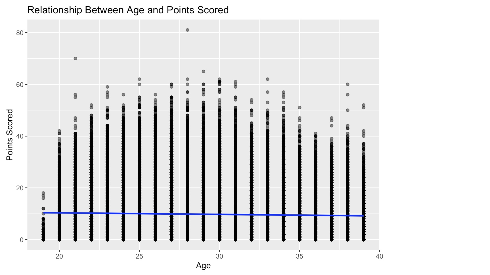
Age coefficient: -0.06 points per year
t-statistic:-20.42
p-value: < 0.001
R²: 0.0009
Each additional year of age is associated with 0.06 fewer points per game
Relationship is statistically significant (p < 0.001)
Age explains < 0.1% of scoring variation (R² = 0.0009)
The model identified a statistically significant negative relationship between age and scoring production (β = -0.06, p < 0.001), suggesting that players score slightly fewer points as they get older. However, the effect size is relatively small, with each additional year of age associated with a decrease of roughly 0.06 points per game.
Perhaps more interestingly, age alone explains very little of the variation in scoring performance (R² = 0.0009). While the relationship is statistically significant, scoring is clearly influenced by many other factors beyond age, including player role, skill level, team context, and playing time.
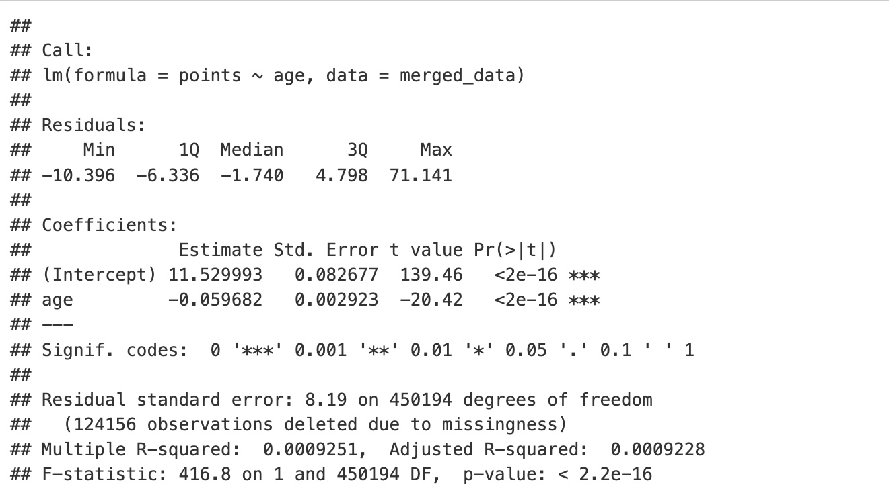
Veteran Players Continue Receiving Significant Playing Time
Using the same linear regression approach, I next examined whether age was associated with changes in playing time across the league.
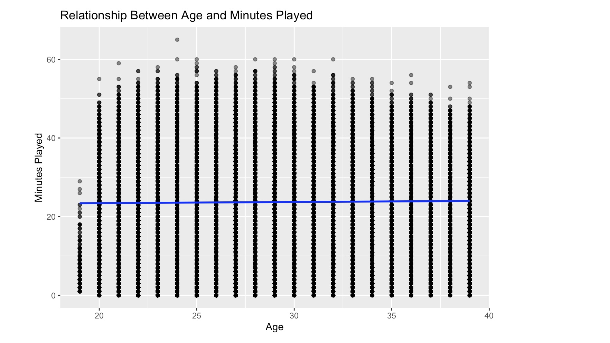
Age coefficient: +0.03 minutes per year
t-statistic: 7.01
p-value: < 0.001
R²: 0.0001
Each additional year of age is associated with 0.03 more minutes played
Relationship is statistically significant (p < 0.001)
Age explains <0.1% of variation in playing time (R² = 0.0001)
Unlike scoring production, playing time exhibits a small positive relationship with age. One possible explanation is that veteran players bring qualities that extend beyond raw athletic performance, including experience, decision-making, and leadership. However, this result should be interpreted with caution due to survivorship bias. As players age, the NBA population becomes increasingly selective, with many lower-performing or lower-minute players already having exited the league. As a result, the positive relationship likely reflects both the value of experience and the fact that older players who remain active tend to be those whom teams trust most.
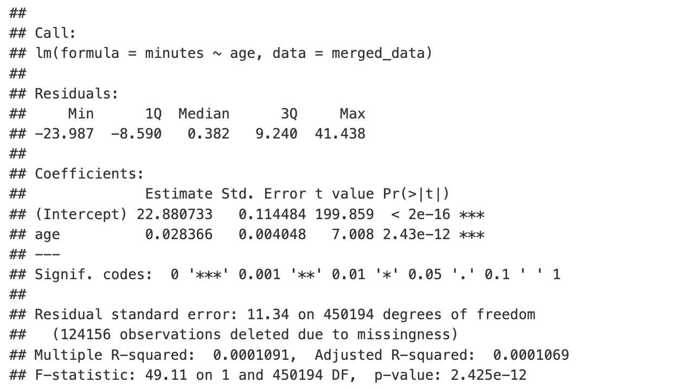
Elite Players Tell a Different Story
League averages can sometimes hide important patterns. To better understand elite performance, I isolated the NBA’s highest-scoring players and repeated the analysis.
This shift from the full league to a top-scorer segment changed the story. Instead of looking only at the average player, the analysis focused on players whose value is strongly connected to offensive production.
Aging Has a Greater Impact on Elite Scorers
To see whether elite scorers follow a different aging curve, I isolated the ten highest-scoring players in the dataset and repeated the regression analysis.
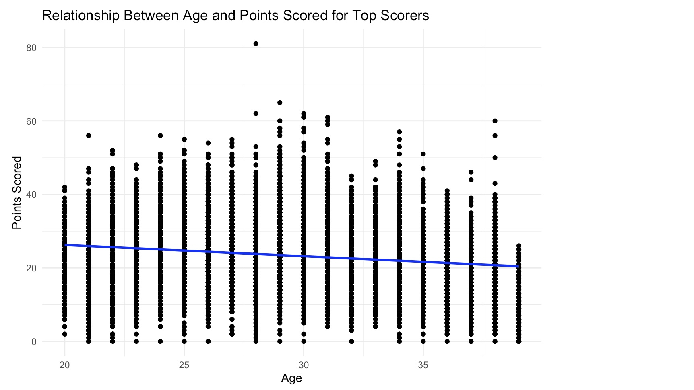
Age coefficient: -0.30 points per year
t-statistic: -18.1
p-value: < 0.001
R²: 0.025
Each additional year of age is associated with 0.30 fewer points per game
Relationship is statistically significant (p < 0.001)
Age explains 2.5% of scoring variation (R² = 0.025)
Unlike the overall NBA population, elite scorers experienced a much stronger decline in scoring production as they aged. While the league-wide analysis found a decrease of just 0.06 points per year, the effect among top scorers was five times larger at 0.30 points per year. This may be because elite scorers often rely more heavily on athleticism and shot creation, making their offensive production more sensitive to aging. Additionally, many star players gradually transition from primary scoring options to facilitators and playmakers later in their careers, shifting their impact from scoring volume to overall game management.
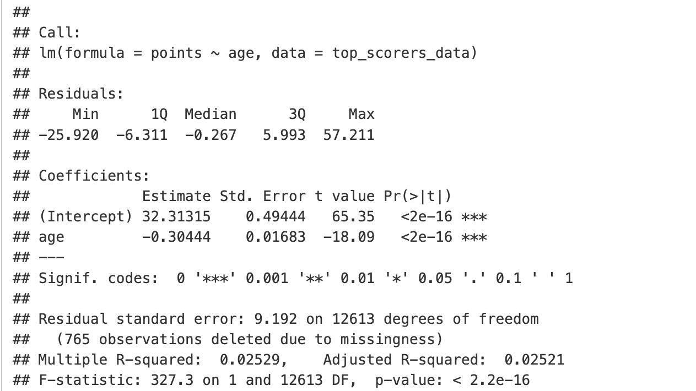
Every Career Tells a Different Story
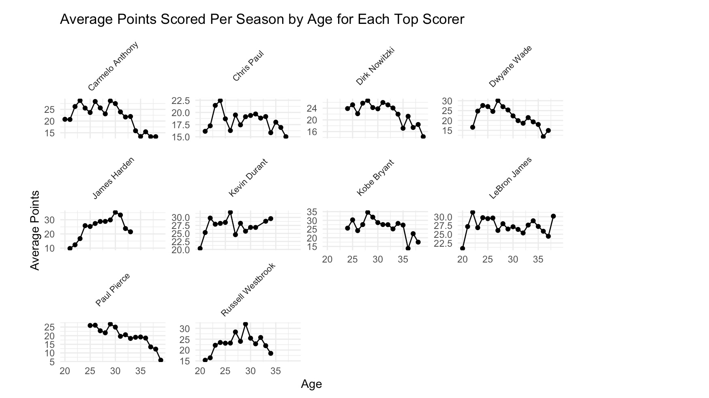
While the regression reveals a clear overall decline in scoring production with age, the individual player trajectories show that this decline is far from uniform. Players such as Dirk Nowitzki, Dwyane Wade, and Paul Pierce exhibit relatively pronounced declines in their later years, while LeBron James and Kevin Durant maintained remarkably consistent scoring output well into their thirties. Kobe Bryant’s trajectory highlights both sustained excellence and a sharp late-career drop-off, while Chris Paul demonstrates how a player can remain productive despite no longer serving as a primary scoring option. Taken together, these career arcs reinforce the broader trend identified by the regression while highlighting an important reality: age affects everyone, but it does not affect everyone in the same way.
Elite Players Also Experience Reduced Playing Time
Scoring is only one measure of a player’s role. Using the same group of elite scorers, I next examined how minutes played change as players age.
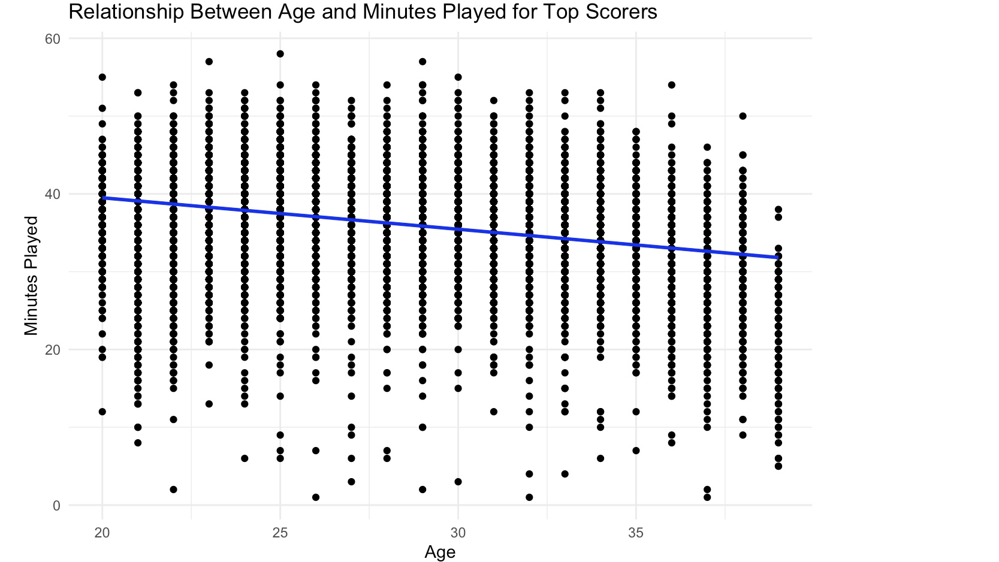
Age coefficient: -0.40 minutes per year
t-statistic: -34.89
p-value: < 0.001
R²: 0.088
Each additional year of age is associated with 0.40 fewer minutes per game
Relationship is statistically significant (p < 0.001)
Age explains 8.8% of scoring variation (R² = 0.088)
Among elite scorers, playing time declines alongside scoring production as players age. The model estimates a reduction of approximately 0.40 minutes per game for each additional year of age, with age explaining nearly 9% of the variation in playing time—a substantially stronger relationship than those observed in the league-wide analysis.
One possible explanation is that teams deliberately manage the workloads of aging stars to reduce injury risk and preserve long-term effectiveness. Additionally, many veteran players transition away from carrying a primary scoring role, relying more on experience and playmaking rather than heavy minutes. While survivorship bias is still present, the results suggest that even elite players experience meaningful reductions in workload as they age.
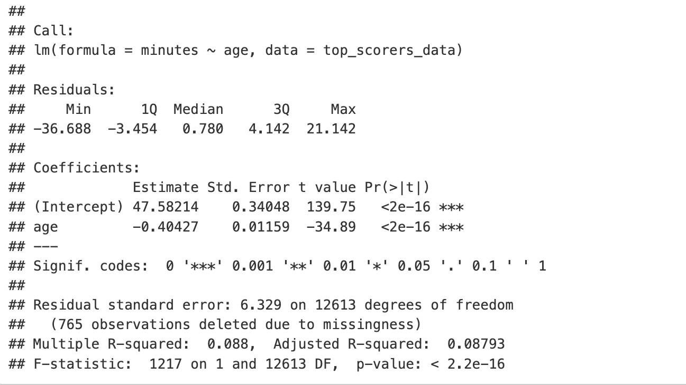
How Teams Manage Aging Stars
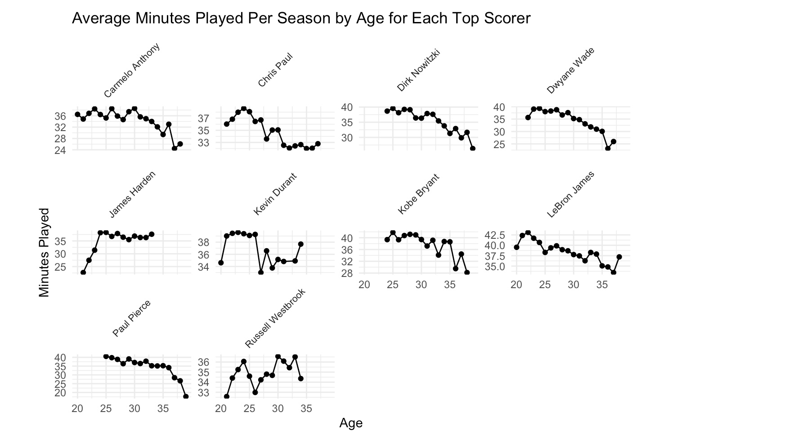
The individual player trajectories largely reinforce the relationship identified by the regression model. While the rate of decline varies from player to player, most elite scorers experienced a gradual reduction in playing time as they progressed through their thirties. Players such as Dirk Nowitzki, Dwyane Wade, Paul Pierce, and Chris Paul show particularly clear downward trends, while LeBron James and Kevin Durant maintained heavier workloads deeper into their careers. Even among these exceptional players, however, sustained high-minute seasons become less common with age, suggesting that workload management plays an increasingly important role in extending longevity and preserving performance.
Conclusions
This analysis suggests that age does influence NBA performance, but not in the way I initially expected. Across the league as a whole, age showed only a modest relationship with scoring production and playing time. Among elite players, however, the effects appeared far more pronounced, with both scoring output and workload declining as players moved through their thirties.
At the same time, these results should be interpreted with some caution. Performance is shaped by far more than age alone, including injuries, team context, player role, coaching decisions, and changes in playing style. The stronger relationships observed among elite scorers may also reflect statistical factors. High volume scorers simply have more room for offensive decline, while restricting the analysis to players with similar roles reduces much of the variability present in league wide data, making the effects of aging easier to detect. The analysis also focused on just two metrics, points scored and minutes played, which capture only part of a player’s overall contribution on the court.
If anything, this project left me with more questions than answers. I would love to revisit this analysis in the future and explore how aging patterns differ across NBA eras, whether role players experience aging differently than stars, and how the story changes when incorporating metrics such as assists, rebounds, efficiency, advanced analytics, and overall impact measures. A player level longitudinal approach could also provide a clearer picture of how performance evolves throughout a career while helping separate the effects of aging from survivorship bias and career selection effects.
Ultimately, the data confirms what basketball fans have observed for decades: age eventually catches up to everyone. What makes players like LeBron James so fascinating is not that they escape the aging curve entirely, but that they continue finding ways to remain exceptional long after most players have begun to decline. More than anything, this project reinforced how difficult it is to separate aging from the many other factors that shape a player’s career, and how much there is still left to explore.